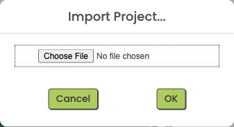

Import the project
In App Inventor · Projects
Import means opening the supplied project for editing. Do not start with an empty app.
In App Inventor, open Projects. Choose Import project (.aia) from my computer. Choose LanguageApp_Firebase_Starter.aia from Downloads, then confirm.
Check: The project opens in Designer and its preview shows Ju and House.
Help if you get stuck
Import LanguageApp_Firebase_Starter.aia from Downloads into MIT App Inventor. Keep the supplied sign-in and saving code. Do not start a blank project.
Projects → Import project
Choose the starter .aia
